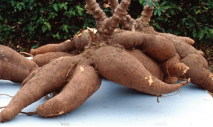
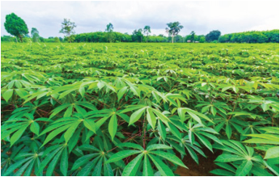

Agriculture for Secondary Schools
Figure 3.1 (b) Cassava root tubers
Figure 3.1 (a): a Field of cassava
Source:https://www.linkedin.com/pulse/
Source:https://www.iita.org/research/our-
unlocking-potential-cassava-smart-crop-
research-themes/improving-crops/1024_
kenyas-asal-regions-khasoa-l9vwf
cassava-tubers_opt/
Exercise 3.1
1. Describe the main uses of cassava crop.
2. Describe how cassava contributes to food security in Tanzania.
3. Why is cassava considered an essential staple food in many developing
countries?
4. Mr. Mpenda Kazi’s cattle ate cassava from Mrs. Kilimo Kwanza’s farm.
Shortly after, the cattle exhibited the following symptoms: rapid breathing
and excessive salivation. Mr Mpenda Kazi accused Mrs Kilimo Kwanza
of bewitching his cattle. However, the examination report from a livestock
officer revealed that there were a factor relating to cassava behind this
scenario. Use an internet or library search to find out the possible main cause
from cassava for this situation to resolve the dispute.
Principles and practices of cassava production
Effective cassava production ensures high yields by correctly choosing the
production site, selecting cassava planting materials, planting, water management,
nutrient management, pest management, harvesting, and post-harvest management.
Choosing a site for cassava production
Adhere to a crop’s ecological requirements for the successful production of
cassava. Ecological factors include soil factors (soil pH, soil type, and fertility)
and climatic and physical factors such as rainfall, temperature, altitude, and
topography.
42
Student’s Book Form Two